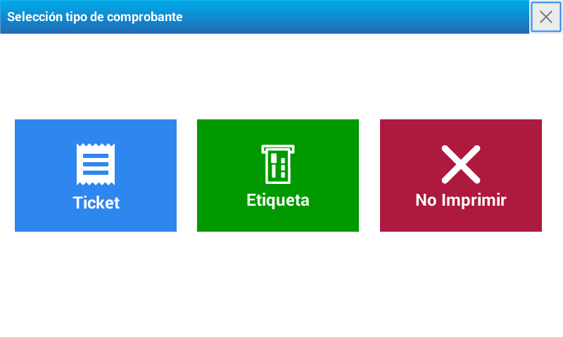

Venta de artículos
Venta de artículos en modo etiqueta
Para poder realizar la venta de artículos en modo etiqueta debe colocar primero un rollo de etiquetas.
Una vez realizado el cambio, se visualiza en la pantalla de la balanza un recuadro con tres opciones. Seleccione Etiqueta

Impresión de etiquetas con productos de venta por peso
Seleccione el producto utilizando alguna de las opciones descriptas en Operación - Artículos
Coloque el PESO sobre la bandeja.
Si precisa modificar el precio, presione e ingrese el nuevo valor
Presione para confirmar.
Presione la tecla
Impresión de etiquetas con productos de venta por unidad
Seleccione el producto utilizando alguna de las opciones descriptas en Operación - Artículos
Si es preciso modificar la cantidad, presione y coloque la proporción de unidades que corresponda.
Para cambiar el precio, presione y digite el valor del producto
Presione para confirmar.
Presione la tecla
Multiplicación de productos de venta unitaria
Ingrese la cantidad
Presione la tecla
Luego presione e ingrese el precio por unidad
Presione para confirmar.
Presione la tecla
Impresión automática de etiquetas. Modo Pre-empaque
El modo Pre-empaque se utiliza para etiquetar varios productos del mismo tipo con un mismo PLU de manera sucesiva, con la mínima intervención del operario.
Este modo presenta la ventaja de mantener activo el último PLU seleccionado, de manera tal que tan sólo deba colocar la mercadería en la bandeja para que la balanza emita una etiqueta (productos pesables).
Además, es importante destacar que el pre-empaque puede utilizarse para etiquetar productos que son pesados fuera de la vista del consumidor (ejemplo productos pre-envasados depositados en góndola).
Modo de operación: Presione para activar la función PRE-EMPAQUE. Luego verifique que se encuentre activada la función en el visor.
Pre-empaque para un artículo pesable:
Seleccione el artículo.
Coloque el artículo, al estabilizarse emitirá la impresión.
Retire el artículo, coloque un artículo diferente y se imprimirá una nueva etiqueta.
Repetir la operación tantas veces como sea necesario.
Pre-empaque para un artículo no pesable
Seleccione el artículo.
Automáticamente se emitirá la etiqueta.
Para imprimir más etiquetas presione la tecla las veces que sean necesarias o elija un nuevo artículo.
Venta de artículos en modo ticket
El modo ticket está concebido para realizar la venta de varios artículos y que la suma se imprima en un sólo comprobante.
En un mismo ticket, se podrán visualizar la comercialización de artículos de venta por peso, por unidad o de venta unitaria multiplicada.